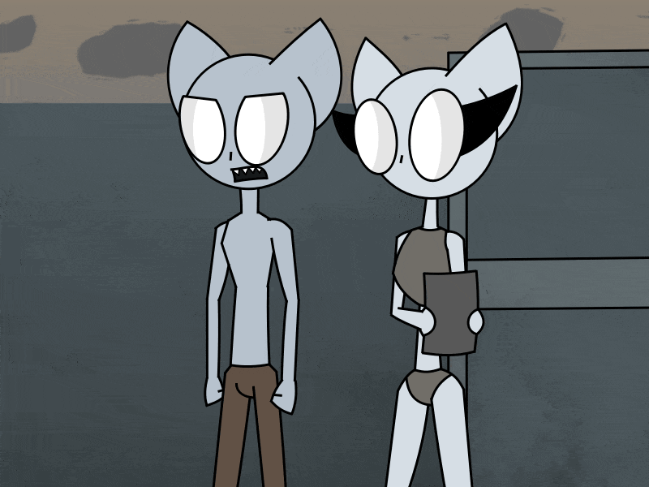

Nisch was out of the alley she and her brother were in and was on the way to Rio's lottery. She was again out in the
public which she was not used to.

She really doesn't know what she'll encounter from doing this. Let alone with the little clothing she has.
"Hi Nisch."
"Didn't expect you to come out to the open again. Consumed some delicious junk?"
Nisch knew who this was. It's her and Julp's old rival Mr Rata.
"Get lost Rata! I have no business with you or have time to talk with you either!"

"Of course not. You don't have the valuta to make business." Rata said. "You're also wasting your time with the lottery
cause you have no chance on joining it."
"What do you mean by that ugly?" Nisch asked aggressively. "If you want to prevent me from joining it then you'll not
gonna stop me. I have the rights to go!"
Rata Explained "You will not because you lack the payment for it. Lotteries tend to cost so what do you think you'll give
to go onboard it? Some crap in the alley? You're poor!"
"You Elkenins where rich for generations and had no issue joining anything! Now when it's over, you can't do anything.."

Then all of a sudden, Julp appeared. "Don't talk like that to my sister Rata. The poster didn't say anything about a price."
"Elkenins was always towering above us Ganters for years, but now it's over! You can't be right about anything anymore
garbage eaters! This lottery is not for free!"
"It is actually for free!"
It was Rio who snuk up in the argument. "my lottery was gonna cost too much for anyone so I decided to be a little honest
and make it free for everyone." Rata replied to the sudden info "But that's insanity! You have no rights on doing this!"
Rio replied back "Yes I have. Business rights doesn't apply to me anymore!"
"You're the Elkenin twins right? Your father was a good and helpful man that got me out of troubled times. So I will give
his children something as a gratitude for his sacrifices." Rio said nicely to the twins.
Julp said "Dad was a good man indeed Rio. We forgot that you where his friend from a long time ago." Rio replied "He sure is
Julp! He got me rich after all. Here."

Rio gave Nisch a lottery ticket. They where in the lottery now. "This means a lot to us Rio. We've been poor for years."
Nisch said with a light hearted voice.
"Alright then! Give me a ticket Rio. I'm joining in on this as well." Rata said. "Alright then Mr Rata. But I'm still not
happy for what your family did against mine years ago." Rio said giving the rich scumbag a ticket.
"Is everyone happy with their gifts? Very good. Now I must be off to make sure the workers are doing their job back at the
lottery site. Good luck everyone!" Rio gave these words before leaving the twins and their rival alone.
(Work In Progress)
Back | Part2 | Part4 (Waiting)